Quick start
- Put
Tangler.appin Applications and open it. - In Settings → Diagnostics → Permissions, enable Accessibility for window control and global input. Enable Screen Recording for window thumbnails. Tangler opens Diagnostics on first launch if Accessibility is missing.
- Focus a window. Hold right Command, then press ← to place it on the left half of the screen. Keep holding the leader key while entering a sequence.
- Open Settings → Shortcuts to choose your leader key, search or filter commands, and record custom shortcuts. Record previews your input; Save keeps it; Esc cancels an unsaved recording.
Choose Follow System, 简体中文, or English in Settings → General → Language. Changes apply immediately. Command search accepts both English and Chinese names, including pinyin.
The sequences below use the defaults. Your saved shortcuts take precedence. Independent shortcuts, such as ⌘ Tab for the window switcher, do not need the leader key.
Arrange windows from the keyboard

The animations are illustrated walkthroughs, not screen recordings. Actual window contents and materials depend on your apps and system appearance. Reduce Motion shows a still frame.
Snap a window by dragging it, use the Option-key grid, or place it with a command. Layout commands also move windows between displays and desktops.
| While holding the leader key | Action |
|---|---|
| ← / → / ↑ / ↓ | Place the focused window in a half of the screen |
| U / I / J / K | Place it in a corner |
| F | Maximize |
| Z | Restore its previous position |
| Space | Open command search |
Learn the complete command sequences, or read the macOS behavior notes for system integration and limitations.
Keep related apps in one tab group

Group windows that occupy the same area, then select a tab to bring its window to the front. The windows can belong to different applications.
Hold the leader key and enter T, T to group windows in the same area, or T, A to pick a window to add. [ and ] switch tabs; T, U ungroups them. Adjust tab-bar height and behavior in Settings → Tab groups.
Return to a saved workspace

Save a desktop's window layout and tab groups, then reopen or restore that setup. In Settings → Workspaces, select a workspace and choose the window or tab in its layout preview that should receive focus when it opens.
Hold the leader key and enter W, S to save a checkpoint, W, R to restore it, or W, digit to open a numbered workspace. The gear button contains autosave settings; the trash button switches to deleted workspaces.
A workspace currently represents one desktop on one display. It saves application windows and Tangler tab groups; browser-internal tabs are not captured. Restoration depends on the applications involved.
Learn the workspace commands →
Find the window you need
- Window switcher: use ⌘ Tab for windows across apps, or ⌘ ` for windows of the same app.
- Dock previews: inspect window thumbnails from an application's Dock icon.
- Command search: hold the leader key and press Space to find a command by name.
Guides
| Guide | What you will learn |
|---|---|
| Command reference | All commands, default leader sequences, independent shortcuts, and which window each command targets. Start here when learning the keyboard workflow. |
| macOS behavior notes | How layouts, desktops, switching, and Dock previews relate to macOS, including observed limits. |
Build from source
Requires macOS 26+, Swift 6.2+, and the corresponding macOS SDK. Run from the repository root:
scripts/build-app.sh # Build build/Tangler.app
scripts/install-app.sh # Build, replace /Applications/Tangler.app, and launch
Without a configured local signing identity, the build uses ad-hoc signing. An Apple Developer account is not required. Current builds are not notarized; if macOS blocks a downloaded build, verify its origin and follow Apple's opening instructions.
Downloads and release notes live on GitHub Releases. In Settings → Diagnostics → Software Update, check for a new version and choose manual checks, automatic checks with a notification, or automatic downloads and installation. The default checks every 6 hours and asks before installing; automatic installation usually happens when you quit. In-app updates use Sparkle and require a configured production update public key and a published update feed.
License
PolyForm Noncommercial 1.0.0. Noncommercial use, modification, and redistribution are permitted within its terms. Commercial use is not authorized, including internal business use by for-profit companies. This is source-available software under a noncommercial license.
See LICENSE for the complete terms and NOTICE for third-party licenses.